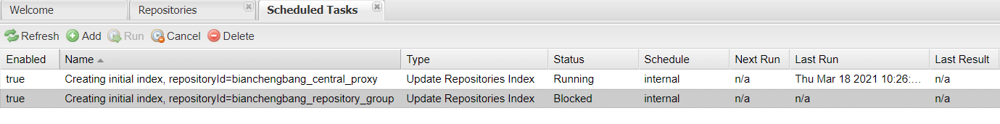
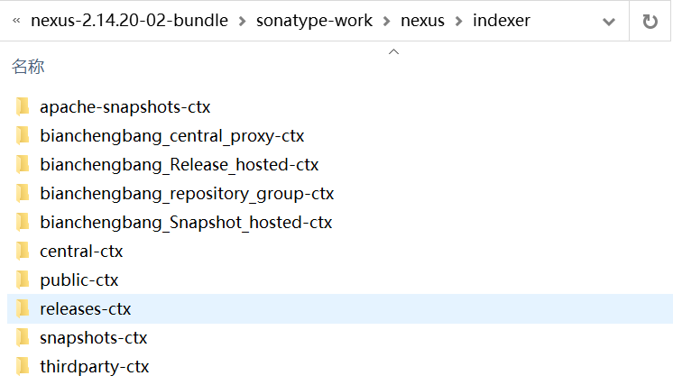
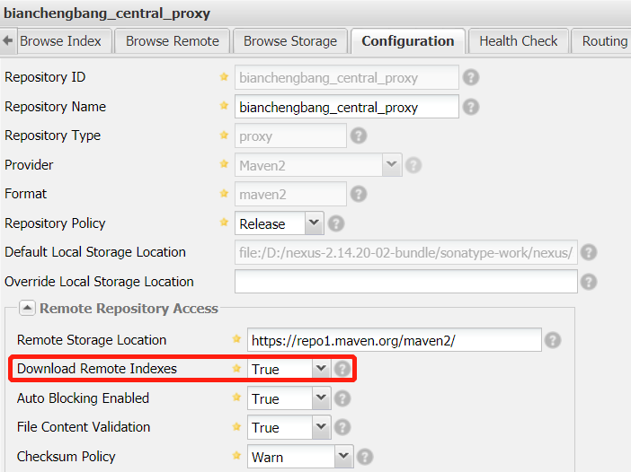
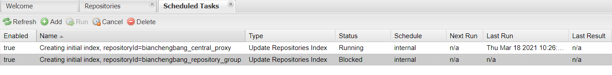
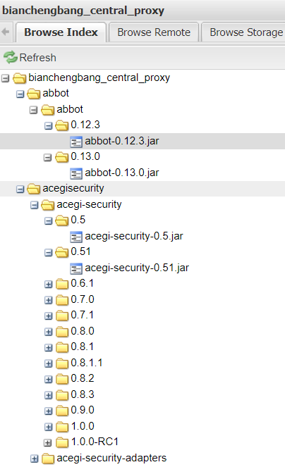
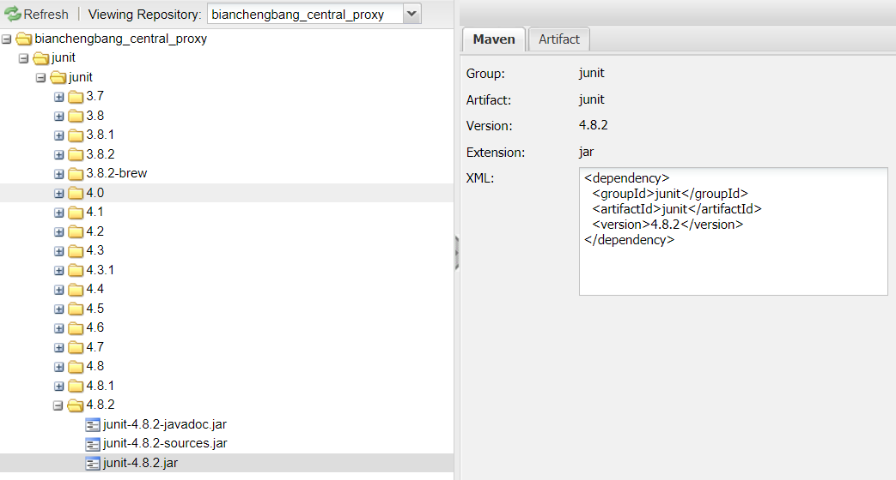
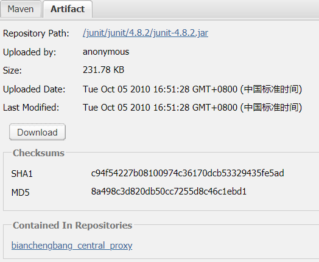
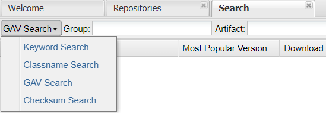

Nexus索引与构件搜索
我们知道，Maven 中央仓库为用户提供了多达数十万构件，而 Nexus 可以代理所有的远程仓库（包括 Maven 中央仓库），可见 Nexus 仓库中构件的数量相当庞大。用户想要在这么多构件中，快速的查找自己所需的构件，一个最直接有效的方式就是：搜索。
Nexus 作为一款成熟的仓库管理工具，它通过维护仓库的索引提供了构件搜索功能，以便帮助用户方便快速地找到所需构件。
本节我们将详细为您介绍 Nexus 索引以及构件搜索功能。
大多数的远程公共仓库（例如，中央仓库）都维护了一个这样的索引，因此本地的 Nexus 在下载到这个索引后，就能在此基础上为用户提供构件搜索和浏览等服务。需要注意的是，并不是所有的公共仓库都提供了索引 ，对于那些没有提供索引的仓库来说，我们是无法对其进行搜索的。
以 bianchengbang_central_proxy 代理仓库（代理 Maven 中央仓库）为例，在图 2 所示的位置就可以控制它的索引下载功能，true 表示开启索引下载，false 表示关闭索引下载。
开启索引下载功能后，点击导航栏中 Scheduled Tasks 链接，查看调度任务列表。若 Nexus 正在下载索引，我们就能看到如图 3 所示的任务，其任务状态为 Running。在索引下载完毕后，该任务就会消失。

在 Nexus 界面左边导航栏中有一个搜索框，在搜索框内输入所需构件的关键字，单击搜索按钮就能快速得到搜索结果，如图 5 所示。
搜索结果页中的每一行代表一类构件，其中包含了 Group、Artifact、版本、流行版本、以及下载链接等信息。点击其中某一行，下方就会出现该构件的详细信息，其中不但包含构件的坐标等基本信息，还包含一段 XML 依赖声明，我们可以将这段 XML 依赖声明直接复制到项目的 POM 中使用，如图 6 所示。
点击右侧的 Artifact 选项卡，还能看到构件的大小、上传时间、最后修改时间、仓库中的相对位置、校验和等信息，如图 7 所示。
除了关键字搜索外，Nexus 还提供了一些高级搜索功能，例如类名搜索、GAV 搜索以及“校验和”搜索。我们可以通过点击搜索页左上角的下拉菜单，选择高级搜索功能。
Nexus 还具有以下高级搜索功能：
这些搜索功能的使用都十分的简单，我们可以根据自己的需求选择合适的搜索功能。
Nexus 作为一款成熟的仓库管理工具，它通过维护仓库的索引提供了构件搜索功能，以便帮助用户方便快速地找到所需构件。
本节我们将详细为您介绍 Nexus 索引以及构件搜索功能。
索引
Nexus 能够遍历仓库的所有内容，搜集它们的坐标，校验和以及所包含的 Java 类等信息，然后以索引（ nexus-indexer） 的形式保存起来。Nexus 索引保存在 Nexus 安装目录下 \sonatype-work\nexus\indexer 目录中，该目录下每个子目录都代表 Nexus 中的一个仓库，用来存放各个仓库的索引 ，如下图所示。

图1：Nexus 索引目录
图1：Nexus 索引目录
大多数的远程公共仓库（例如，中央仓库）都维护了一个这样的索引，因此本地的 Nexus 在下载到这个索引后，就能在此基础上为用户提供构件搜索和浏览等服务。需要注意的是，并不是所有的公共仓库都提供了索引 ，对于那些没有提供索引的仓库来说，我们是无法对其进行搜索的。
下载索引
Nexus 索引下载功能默认是关闭的，如果想在 Nexus 中搜索远程仓库中的构件，就需要先开启索引下载功能。以 bianchengbang_central_proxy 代理仓库（代理 Maven 中央仓库）为例，在图 2 所示的位置就可以控制它的索引下载功能，true 表示开启索引下载，false 表示关闭索引下载。

图2：远程索引下载
开启索引下载功能后，点击导航栏中 Scheduled Tasks 链接，查看调度任务列表。若 Nexus 正在下载索引，我们就能看到如图 3 所示的任务，其任务状态为 Running。在索引下载完毕后，该任务就会消失。

图3：Nexus 调度任务列表（猛击图片，查看原图）
由于 Maven 中央仓库的内容较多，其索引文件比较大，因此 Nexus 下载该文件所需的时间较长，需要我们耐心等待。
索引下载完成后，点击仓库列表中的 bianchengbang_central_proxy 代理仓库，然后在列表下方选择 Browse Index 选项卡，我们可以看到该仓库内容的树形结构，如图 4 所示。

图4：Nexus 仓库索引树形结构图
构件搜索
Nexus 通过维护索引，为用户提供了关键字搜索、类名搜索、坐标搜索等多种搜索功能，通过这些功能，页面中能够清晰地展示出结果构件的坐标以及所属仓库。用户可以直接下载相应的构件，也可以直接复制构件的 XML 依赖声明，到项目中使用。在 Nexus 界面左边导航栏中有一个搜索框，在搜索框内输入所需构件的关键字，单击搜索按钮就能快速得到搜索结果，如图 5 所示。
图5：Nexus 搜索功能（猛击图片，查看原图）
搜索结果页中的每一行代表一类构件，其中包含了 Group、Artifact、版本、流行版本、以及下载链接等信息。点击其中某一行，下方就会出现该构件的详细信息，其中不但包含构件的坐标等基本信息，还包含一段 XML 依赖声明，我们可以将这段 XML 依赖声明直接复制到项目的 POM 中使用，如图 6 所示。

图6：Nexus 搜索结果详情
点击右侧的 Artifact 选项卡，还能看到构件的大小、上传时间、最后修改时间、仓库中的相对位置、校验和等信息，如图 7 所示。

图7：Nexus 搜索详情页 Artifact
除了关键字搜索外，Nexus 还提供了一些高级搜索功能，例如类名搜索、GAV 搜索以及“校验和”搜索。我们可以通过点击搜索页左上角的下拉菜单，选择高级搜索功能。

图8：Nexus 高级搜索功能
Nexus 还具有以下高级搜索功能：
- 类名搜索（Keyword Search）:搜索包含某个 Java 类的构件。
- GAV 搜索（GAV Search）:通过设置 Group、Artifact、版本等信息进行搜索。
- 校验和搜索（Checksum Search）:通过使用“校验和”搜索构件。
这些搜索功能的使用都十分的简单，我们可以根据自己的需求选择合适的搜索功能。
关注公众号「站长严长生」，在手机上阅读所有教程，随时随地都能学习。内含一款搜索神器，免费下载全网书籍和视频。

微信扫码关注公众号